§ 7.02 Liegeverbot
Binnenschifffahrtsstraßen-Ordnung
1. Ein Fahrzeug, ein Schwimmkörper oder eine schwimmende Anlage darf nicht stillliegen:
a) auf einem Schifffahrtskanal, in einem Schleusenkanal oder auf einem Abschnitt der Wasserstraße, für den ein allgemeines Stillliegeverbot besteht;
b) auf einer von der zuständigen Behörde bekannt gegebenen Strecke;
c) auf einer durch das Tafelzeichen A.5 (Anlage 7) gekennzeichneten Strecke, auf der Seite der Wasserstraße, auf der das Tafelzeichen steht; | 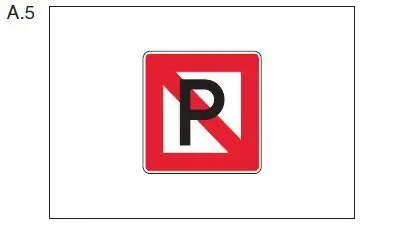 |
d) unter einer Brücke oder Hochspannungsleitung;
e) in einer Fahrwasserenge im Sinne des § 6.07 und in ihrer Nähe sowie auf einer Strecke, die durch das Stillliegen zu einer Fahrwasserenge werden würde, und in der Nähe einer solchen Strecke;
f) an einer Einfahrt in und einer Ausfahrt aus einem Hafen oder einer Nebenwasserstraße;
g) in der Fahrlinie einer Fähre;
h) im Kurs, den ein Fahrzeug beim Anlegen an eine Landebrücke oder beim Abfahren benutzen kann;
i) auf einer Wendestelle, die durch das Tafelzeichen E.8 (Anlage 7) gekennzeichnet ist; | 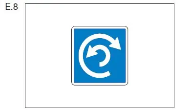 | |
j) seitlich neben einem Fahrzeug, das das Tafelzeichen nach § 3.33 führt, innerhalb des Abstandes, der auf dem dreieckigen weißen Zusatzschild in Metern angegeben ist; | 62 | 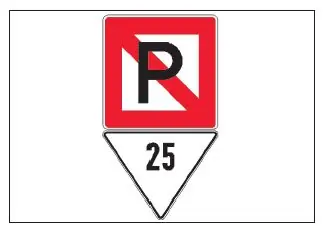 |
k) auf einer durch das Tafelzeichen A.5.1 (Anlage 7) gekennzeichne- ten Wasserfläche, deren Breite auf dem Tafelzeichen in Metern angegeben ist; die Breite bemisst sich vom Aufstellungsort des Tafelzeichens; | 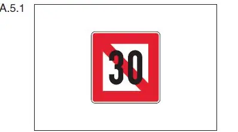 |
l) auf den durch das Tafelzeichen E.17, E.22 oder E.24 (Anlage 7) gekennzeichneten Wasserflächen.
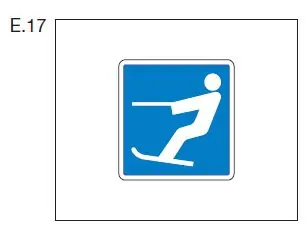 | 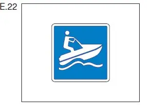 | 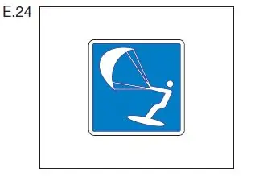 |
2. Auf den Abschnitten einer Wasserstraße, auf denen das Stillliegen nach Nummer 1 Buchstabe a bis d verboten ist, darf ein Fahrzeug, ein Schwimmkörper oder eine schwimmende Anlage nur auf den Liegestellen stillliegen, die durch eines der Tafelzeichen E.5 bis E.7 (Anlage 7) gekennzeichnet sind. Dabei sind die §§ 7.03, 7.04, 7.05 und 7.06 zu beachten.
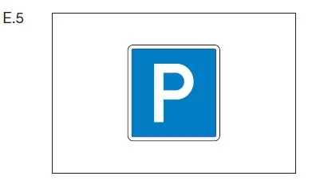 | 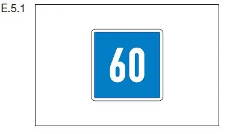 | |
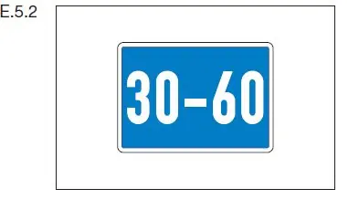 | 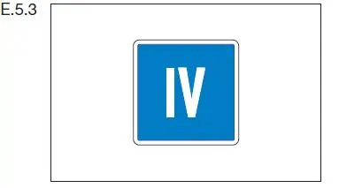 | |
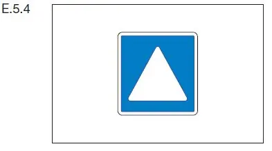 | 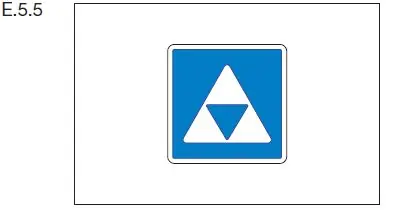 | |
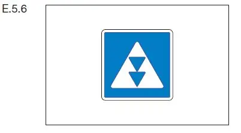 | 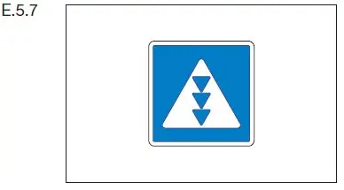 | |
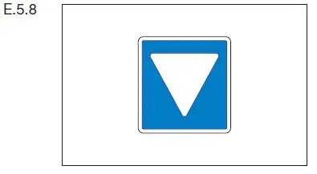 | 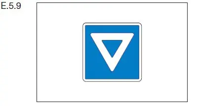 | |
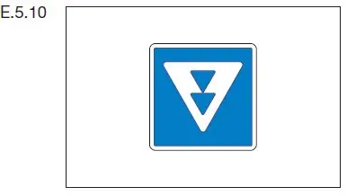 | 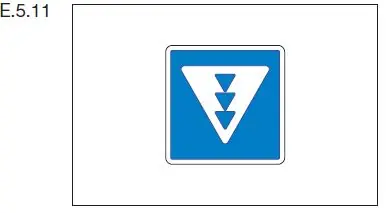 | |
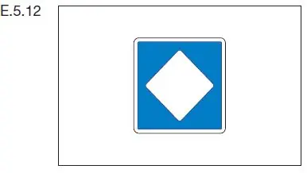 | 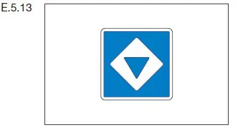 | |
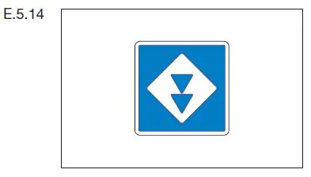 | 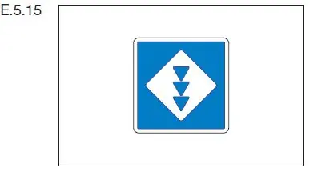 | |
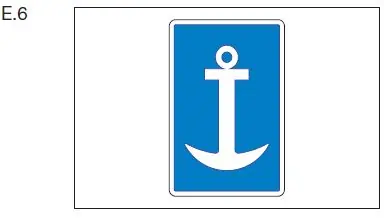 | 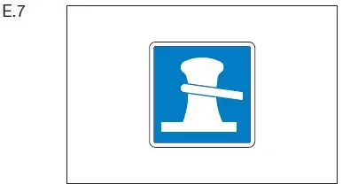 |
3. Auf einer Liegestelle, die durch eines der Tafelzeichen E.5 bis E.7 (Anlage 7) gekennzeichnet ist, ist das Stillliegen eines Fahrzeugs oder eines Schwimmkörpers nur bis zu der für das jeweilige Fahrzeug oder den jeweiligen Schwimmkörper nach dem Zweiten Teil dieser Verordnung auf der jeweiligen Strecke zulässigen Breite erlaubt, wenn nicht die Tafelzeichen E.5.1, E.5.2 oder E.5.3 oder Zusatztafeln zu den Tafeln E.6 oder E.7 etwas anderes zulassen.